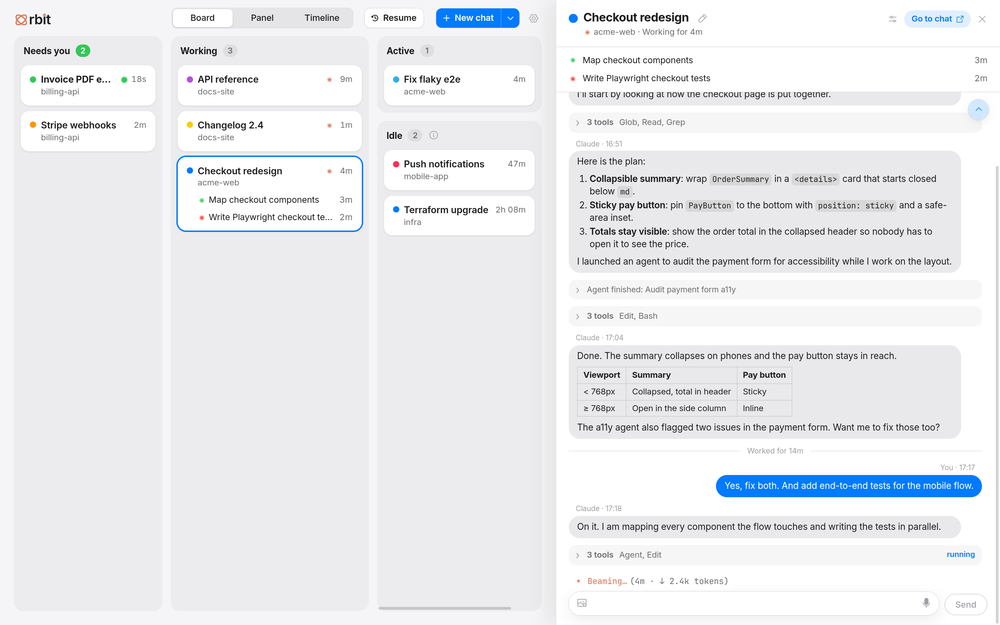
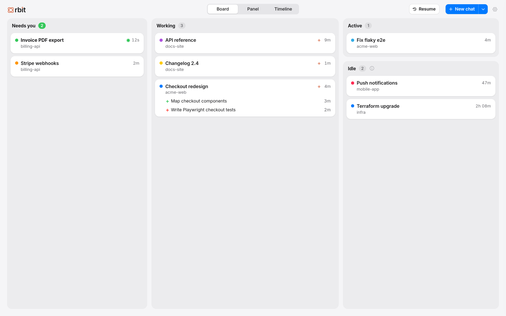
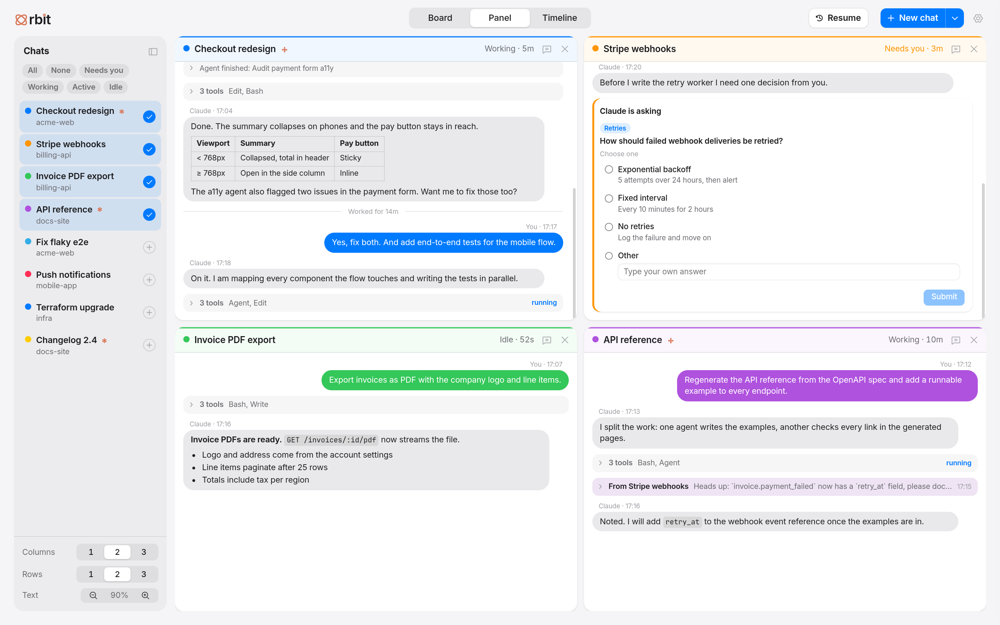
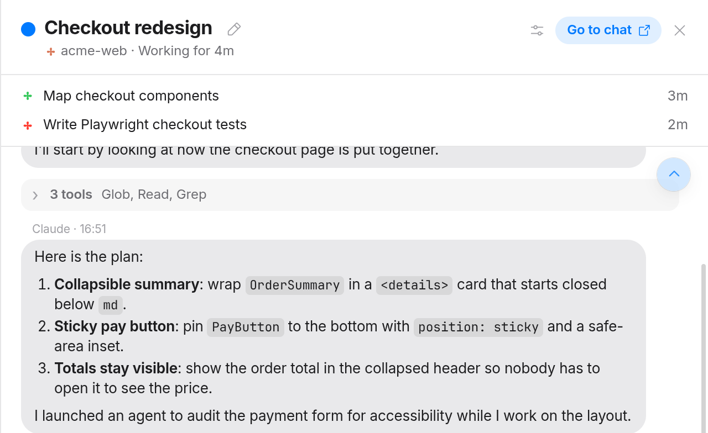
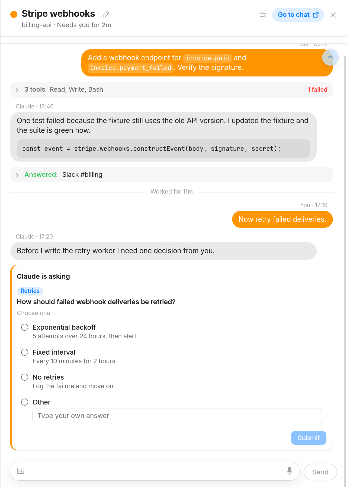
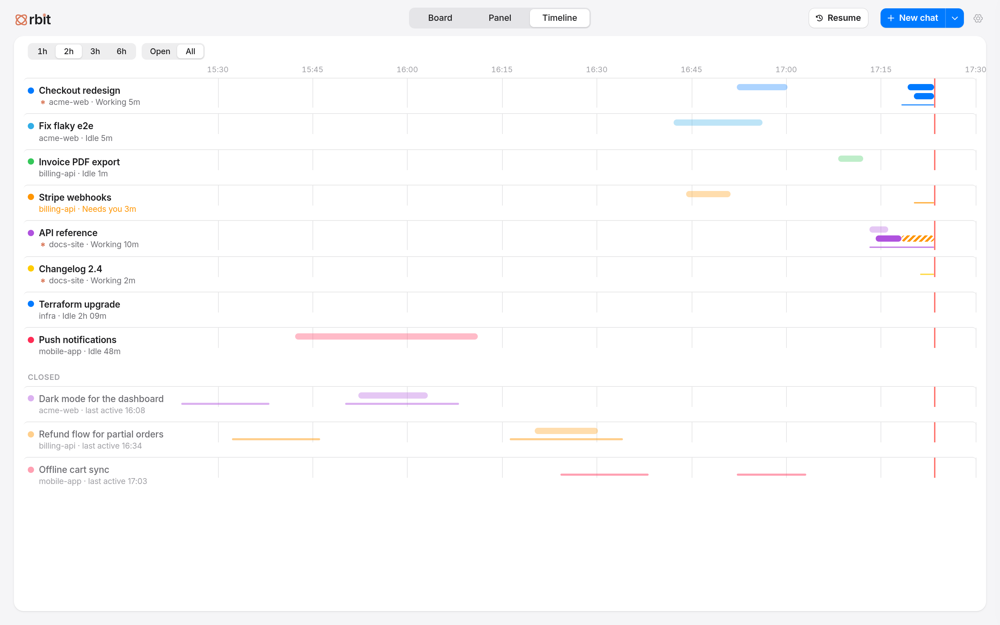

Who needs you, who is working.
Chats sort themselves into Needs you, Working, Active and Idle. Each card shows its color, repository, time in status and every running agent. Pin the ones you care about, suspend the rest.
Orbit watches and steers all the Claude Code chats open on your desktop, so you always know which one needs you.
git clone https://github.com/otaviosenne/orbit.git && cd orbit && npm install && npm start
Orbit runs on Linux with the Hyprland compositor and the kitty terminal. macOS and Windows are not supported.

Five chats in five terminals means hunting for the one that finished. Orbit puts them on one board.
Chats sort themselves into Needs you, Working, Active and Idle. Each card shows its color, repository, time in status and every running agent. Pin the ones you care about, suspend the rest.

Click a card and the chat opens beside the board with rendered markdown, folded tool calls and a composer that types straight into its terminal. Or tile several chats side by side, each with its own composer. Paste images and files, or hold Space to dictate.

Live agents sit under the panel header. Click one to read its own transcript, and spot the ones that went quiet before they cost you an hour.

When Claude asks a multiple-choice question, Orbit shows it at the end of the thread. Pick an answer there instead of hunting for the terminal.

One lane per chat, one bar per agent, and a line for how long each chat has been working or waiting. Switch to All to see chats closed during the window too.

Dictate into any chat, and say a phrase to send. Voice commands switch views and open chats by number.
Search every past chat by date and repository and reopen it in its folder, conversation intact.
See your Claude plan's weekly usage against an even pace over your working hours, week by week.
Optional remote access, so you can check on your chats from your phone. Off until you turn it on.
Orbit only reads what Claude Code writes to disk. Everything happens on your machine.
Glass surfaces, rounded corners and a theme that follows your system.
There is no installer yet: you build Orbit from source.
~/.config/kitty/kitty.conf, then open new kitty windows.
allow_remote_control socket-only
listen_on unix:${XDG_RUNTIME_DIR}/kitty-{kitty_pid}git clone https://github.com/otaviosenne/orbit.git cd orbit npm install npm start